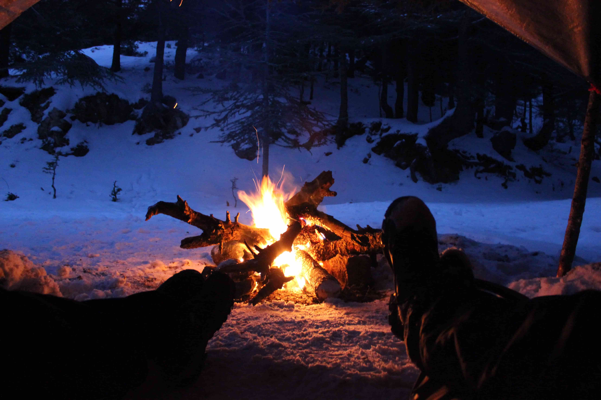

“Look deep into nature, and then you will understand everything better.”— Albert Einstein
“Part of the secret of success in life is to eat what you like and let the food fight it out inside.” ― Mark Twain
“Be yourself, everyone else is already taken.” — Oscar Wilde
“Knowing yourself is the beginning of all wisdom.” ― Aristotle